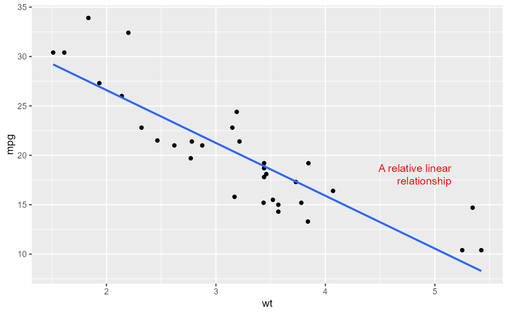

Annotates the plot with text. Compared to annotate("text",...), the
placement of the annotations is specified in plot coordinates (from 0 to 1)
instead of data coordinates.
Arguments
- label
text annotation to be placed on the plot
- x, y
positions of the individual annotations, in plot coordinates (0..1) instead of data coordinates!
- facets
facet positions of the individual annotations
- hjust, vjust
horizontal and vertical justification of the text relative to the bounding box
- color,
alpha, family, size, fontface, lineheight font properties
- alpha, family, size, fontface, lineheight
standard aesthetic customizations
- box_just
placement of the bounding box for the text relative to x,y coordinates. Per default, the box is placed to the center of the plot. Be aware that parts of the box which are outside of the visible region of the plot will not be shown.
- margin
margins of the bounding box
Examples
p <- ggplot(mtcars, aes(x = wt, y = mpg)) + geom_point()
p <- p + geom_smooth(method = "lm", se = FALSE)
p + annotate_textp(x = 0.9, y = 0.35, label="A relative linear\nrelationship", hjust=1, color="red")
#> `geom_smooth()` using formula = 'y ~ x'
